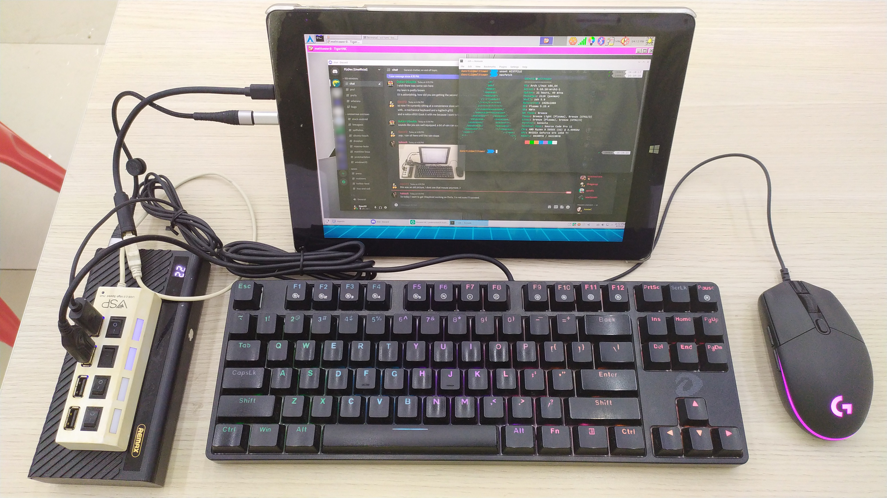

Glass Animals Heat Waves (glassanimals-heatwaves)
Jump to navigation
Jump to search
| 🚧 | This page is a work-in-progress. Some information contained within may be inaccurate or incomplete. |
|
 Chicago95 with XFCE4 on Glass Animals Heat Waves | |
| Manufacturer | Glass Animals |
|---|---|
| Name | Heat Waves |
| Codename | glassanimals-heatwaves |
| Released | 2020 |
| Category | testing |
| Original software | Heat Waves 2.0 |
| postmarketOS kernel | 5.18.19 |
| Hardware | |
| Chipset | Spreadtrum 6580 |
| CPU | Cortex-A7 2.2 GHz |
| GPU | Mali 400 MP2 500 MHz |
| Display | 1920x1280 AMOLED |
| Storage | 8GB eMMC |
| Memory | 2GB |
| Architecture | armv7 |
{kind=link}
| USB Networking |
Works
|
|---|---|
| Flashing |
Works
|
| Touchscreen |
Works
|
| Display |
Works
|
| WiFi |
Works
|
| FDE |
Works
|
| Mainline |
Works
|
| Battery | |
| 3D Acceleration |
Works
|
| Audio |
Works
|
| Bluetooth |
Partial
|
| Camera |
Unavailable
|
| GPS |
Unavailable
|
| Mobile data |
Unavailable
|
| SMS |
Unavailable
|
| Calls |
Unavailable
|
| USB OTG |
Works
|
| NFC |
Unavailable
|
| Accelerometer |
Unavailable
|
|---|---|
| Magnetometer |
Unavailable
|
| Ambient Light |
Unavailable
|
| Proximity |
Unavailable
|
| Hall Effect |
Unavailable
|
| Barometer |
Unavailable
|
| Power Sensor |
Works
|
| Camera Flash | |
|---|---|
| Keyboard |
Unavailable
|
| Touchpad |
Unavailable
|
| USB-A |
Unavailable
|
| HDMI/DP |
Works
|
| Ir TX |
Unavailable
|
| Ir RX | |
| Stylus | |
| Haptics | |
| Ethernet | |
| FOSS bootloader | |
About
The Glass Animals Heat Waves is a merchandise by Glass Animals, followed by their 2020 hit.
The device comes with Spreadtrum processor, with 8 GB of storage and 2 GB of RAM. It runs a stripped down version of Android with vaporwave theme and very small storage, the storage size can be expanded by a MicroSD card.
Unfortunately the device is very rare. So rare, in fact, that it only exists in Dact12's mind.
Contributors
- Sundimmon
Users owning this device
What doesn't work
- Bluetooth: Pairing with a Bluetooth speaker causes the kernel to crash, something to do with codec?
How to enter flash mode
- Disassemble the device and the button is located on the bottom right corner of the board, hold it and power on the board at the same time.
Installation
| WARNING: The internal storage is very small, it's best to flash postmarketOS to an SD card instead. |
RootFS
- Insert a blank SD card to your computer
- Run
pmbootstrap install --sdcard=/dev/SDCARD - After done, insert the SD card to the device and continue to install the kernel.
Install Kernel
- Enter flash mode
- Run
pmbootstrap flasher flash_kernel - Remove power from the board and give power back again